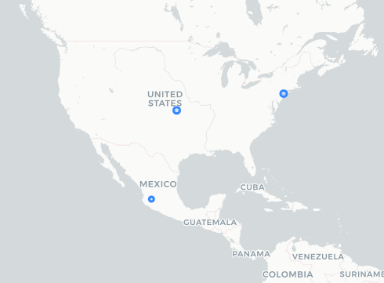

Botón Auxilio Escudo Urbano
Fecha de análisis
- Análisis estático (mediante Exodus Privacy/MobFS): 24/10/2023
- Análisis dinámico (mediante análisis de tráfico de red): 23/10/2023
- Análisis Posteriores:
Archivos analizados
Descripción de la aplicación
- Tipo: Botón de pánico
- Costo: Gratis
- Enlace de descarga: https://play.google.com/store/apps/details?id=com.c5.boton_auxilio_jalisco_flutter
- Descargas: 1k+
- Ultima fecha de actualización: 16/10/2023
- Versión: 2.1.2
- Desarrollador: Gobierno del Estado de Jalisco 2022
- Firma: No disponible
- Contacto: botondeauxilio@c5jalisco.gob.mx
-
Condiciones de uso y Política de privacidad: https://web.archive.org/web/20231024110742/https://botondeauxilio.c5jalisco.gob.mx/api/usuarios/getAllTerminos?id_aplicacion=1
-
Descripción en PlayStore:
Esta nueva aplicación te permitirá generar alertas de ayuda con múltiples indoles.
Rastreadores identificados (mediante Exodus Privacy)
| Rastreador | Tipo |
|---|---|
| Google Firebase Analytics | Analítica |
NOTA: No pudimos analizar esta aplicación en el portal de Exodus Privacy, así que nos guiamos con el resultado del análisis de MobSF.
Empresas relacionadas con esta aplicación:
- Alphabet --> Google - Crashes, Analítica
- Coeficiente Comunicaciones - Almacenamiento de archivos
Dominios integrados al código de la aplicación que no pertecen directamente a los rastreador
- Nada que reportar
Permisos
- Según MobFS/Exodus Privacy: 11
- Según prueba de uso: 2
Permisos según MobSF
-

 ACCESS_COARSE_LOCATION
access approximate location only in the foreground
ACCESS_COARSE_LOCATION
access approximate location only in the foreground -
ACCESS_FINE_LOCATION
access precise location only in the foreground
-
ACCESS_NETWORK_STATE view network connections
-
ACCESS_WIFI_STATE view Wi-Fi connections
-
INTERNET have full network access
-
 READ_CONTACTS
read your contacts
READ_CONTACTS
read your contacts -
 READ_PHONE_STATE
read phone status and identity
READ_PHONE_STATE
read phone status and identity -
VIBRATE control vibration
-
WAKE_LOCK prevent phone from sleeping
-
DYNAMIC_RECEIVER_NOT_EXPORTED_PERMISSION
-
BIND_GET_INSTALL_REFERRER_SERVICE
El icono indica un nivel 'Peligroso' o 'Especial' de acuerdo a los niveles de protección de Google.
Permisos solicitados durante el uso de la aplicación
 Ubicación
Ubicación Acceso a contactos
Acceso a contactos
Este ícono indica un permiso obligatorio
Este ícono indica un permiso opcional pero se pierde una funcionalidad particular
Datos
Datos solicitados al usuario durante el uso de la aplicación
- Nombre y apellido paterno
- Apellido materno
- Fecha de nacimiento
- Sexo (Masculino, Femenino, Otros)
- Correo Electrónico
- Número de Teléfono
- Contacto de emergencia
- Padecimientos (Anemia, asma, cáncer, diabetes, dificultad respiratoria, discapacidad auditiva, epoc, ets, hipertensión, insuficiencia renal, neumonía, obesidad, obstrucción intestinal, paro cardíaco, piedras en los riñones, preeclampsia, quistes, taquicardia, úlceras)
- Perfiles (Ciudadano, Código Violeta, Ganadero)
Este ícono indica un dato obligatorio
Este ícono indica un dato opcional pero se pierde una funcionalidad particular
Tabla de conexiones realizadas durante el uso de la aplicación
| Dirección IP | País | Ciudad | Número AS | Organización AS | Dominio |
|---|---|---|---|---|---|
| 131.196.248.243 | Mexico | Tlajomulco de Zuniga | 265524 | COEFICIENTE COMUNICACIONES | botondeauxilio.c5jalisco.gob.mx |
| 142.251.34.46 | United States | Queens | 15169 | clients4.google.com | |
| 192.178.52.202 | United States | 15169 | firebaseinstallation.googleapis.com |
La columna de Dominio son solicitudes de conexión de la aplicación establecidas a través del DNS. Conocer esto no siempre es posible, ya que muchas veces dichas comunicaciones están cifradas. Sólo ennumeramos aquellas que tienen un interés puntual para este proyecto, a saber, rastreadores y empresas no relacionadas con los rastreadores.
Mapa de conexiones realizadas durante el uso de la aplicación

Datos compartidos y uso según la Playstore:
- No se comparten datos con terceros
Datos recopilados y uso según la Playstore
| Datos | Uso |
|---|---|
| Ubicación precisa | Funciones de la aplicación |
Prácticas de seguridad
- Los datos están cifrados en tránsito
- Puedes solicitar que se borren los datos
Datos recopilados y uso según la Política de privacidad
| Datos |
|---|
| Información identificativa recolectada a través del botón de pánico: Calle, número, cruces de calle, colonia, localidad, municipio, fecha y hora del reporte, nombre completo, tipo de teléfono, número de teléfono del reportante, sexo, edad, nacionalidad |
| Información sensible recolectada a través del botón de pánico: Características fisiológicas, media afiliación, timbre de voz, padecimientos, incapacidades médicas, información de la vida sexual, geolocalización, coordenadas, ubicación de incidentes, referencia del lugar del incidente, rasgos de personalidad. |
| Información del protocolo del incidente: Condición de la persona (viva o muerta), rol de la persona involucrada en el incidente, presencia de alcohol, droga, armas involucradas, placa de vehículos |
| Información recolectada a través de cámaras de videovigilancia: Imagen de personas en el espacio público y bienes inmuebles |
-
El uso general que le dan a la información incluye:
- Fines administrativos:
- Operar los servicios de llamadas de emergencia
- Establecer un banco de información para ayudar a la toma oportuna de decisiones de las autoridades municipales, estatales y federales.
- Coordinar y coadyuvar con instancias federales, estatales y municipales además de organismos privados en la atención de emergencias.
- Remitir a la fiscalía del Estado de Jalisco información para la prevención, investigación y persecución de delitos.
- Generar estadísticas de reportes y llamados de auxilio falsos.
- Generar estadísticas para definir zonas de riesgo en el estado de Jalisco
- Fines administrativos:
-
La información que se comparte con terceros y con subsidiarias puede incluir:
- No se comparte información con terceros.
El ícono denota, lo que creemos que es algo importante a tomar en cuenta sobre la privacidad de la persona usuaria.
Notas importantes sobre seguridad y privacidad:
- El enlace del aviso de privacidad de la Playstore redirige a un aviso de privacidad que es en realidad parte de la API de la aplicación. Lo que lo vuelve bastante ilegible.
- Además de los perfiles "Ciudadano", "Código Violeta" y "Perfil ganaderos", existe el perfil "Adultos Mayores" y el perfil "Personas con discapacidad auditiva". Estos últimos dos se activan automáticamente si se cumple el requerimiento en el registro.
- En esta página se pueden encontrar los avisos de privacidad de varios servicios ofrecidos por el C5 Jalisco. Hay dos que corresponden a botón de pánico y no sabemos cuál corresponde a la aplicación analizada, de todos modos, son idénticos entre ellos. Cada uno tiene tres versiones del aviso de privacidad:
- Aviso de privacidad corto
- Aviso de privacidad simplificado
- Aviso de privacidad integral
- Hay un bug: si no se selecciona el sexo en el registro antes que la fecha de nacimiento, entonces no se puede agregar.
- La aplicación manda muchas veces error en distintas instancias de la misma. Si se vuelve a intentar, el error deja de aparecer.
- A diferencia de la versión pasada (Botón Auxlio Jalisco), esta aplicación exige generar una contraseña segura.
- A diferencia de la versión pasada (Botón Auxilio Jalisco), esta aplicación no permite borrar la cuenta creada.
- Es importante mencionar que esta aplicación es muy distintas a las demás analizadas para el 25N. Esta no permite el monitoreo entre pares, sino que es un botón de auxilio.
- En la PlayStore no se especifican los datos recolectados a la hora de generar una cuenta, ni tampoco los datos de analítica que se recaban a través del rastreador Firebase de Google.
- Si bien se puede solicitar que los datos se borren según la PlayStore, dentro de la aplicación no encontramos esta función.
- En el aviso de privacidad no se menciona la recolección de información a través de rastreadores de terceros (Google).
Conclusiones
- La aplicación está plagada de pequeños errores o bugs que la hacen poco consistente para usarse como botón de pánico.
- Tiene un rastreador de Google y esto no es mencionado nunca en el aviso de privacidad ni en la PlayStore, lo cual nos genera desconfianza.
- La función de borrar la cuenta de la versión anterior de la aplicación nos parecía importante para salvaguardar la privacidad de las personas usuarias y decidieron eliminarla.
- Los avisos de privacidad siguen siendo confusos y no hay enlaces a ellos en la PlayStore.
- Los permisos son congruentes con la funcionalidad de la aplicación, lo mismo que la información recabada.
- Consideramos que es una mejor aplicación que Botón de Auxilio Jalisco y apoyamos el avance y el desarrollo de estas tecnologías, pero todavía necesitan pulirla muchísimo para que pueda ser considerada una opción viable de seguridad.